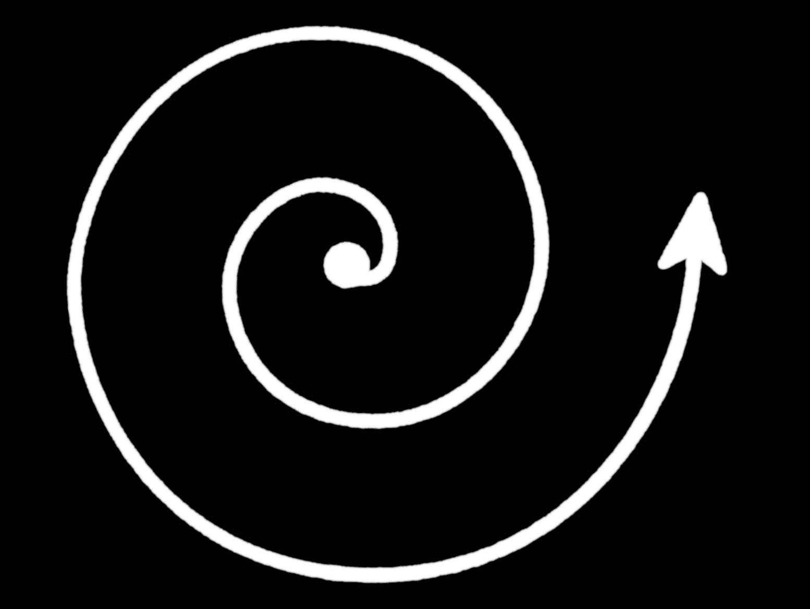
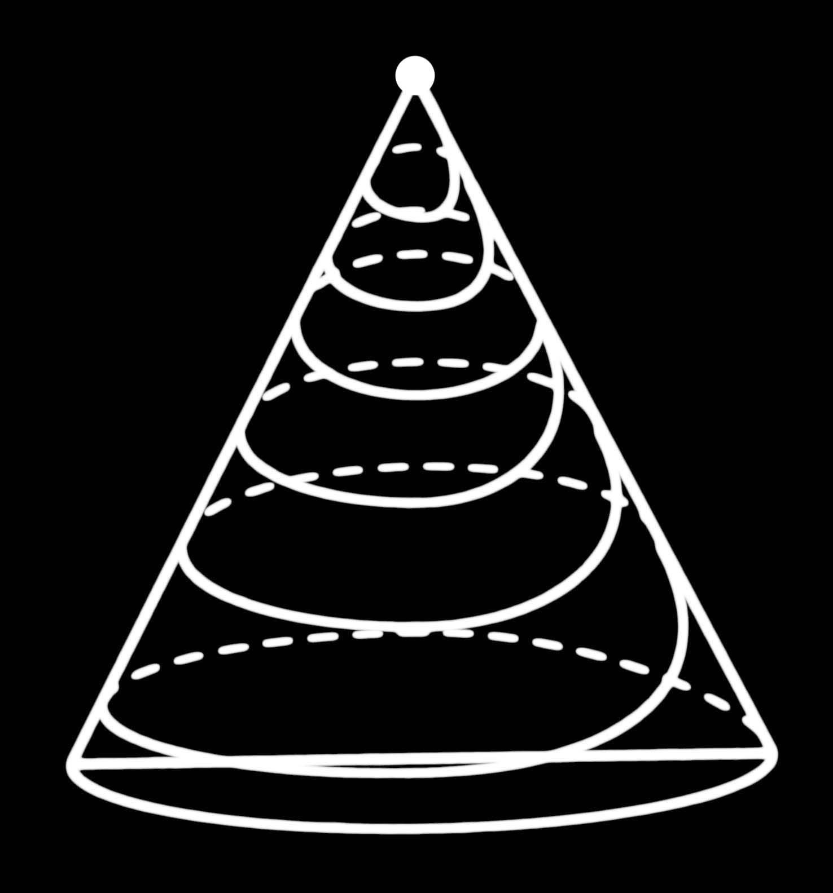

October 4, 1998
When you lose your love, then your life becomes impoverished. What you feel, the unpleasant feeling which lies heavy on you, is the weakening of your own love. When this happens, meaning when you don't love with fullness, then you feel as if you are receiving it, whereas in reality you are transmitting it. The world around functions as a mirror of the world within ourselves; many masters have said this. This means that what we produce internally is "projected" as a reality surrounding our self. That is why, religions and humanistic sciences insist on turning man to observe, initially, and concern himself with his inner world.
Certainly, love can't be restrained by anything. Whether you decide to love someone, this does not depend on any factor of the "external" world – as, for instance, whether this person accepts this role you are attributing to him, whether it is socially acceptable or "proper", etc. – and most mistakes are made exactly at this point: instead of facing the world as a mirror of their self, people reverse the situation and they themselves become the mirrors of the world – which is none other than their lower self, since it constitutes an impure jumble of tendencies, points of view, moods and every kind of "complexity" that moves away from the One.

For however long man identifies with the periphery of his existence, he moves away from the compact core and is subjected to constant swirls, which finally chase him towards the infinite.
The reverse movement of identifying with the self, always leads to internal tranquility, completeness, happiness.
 If Self is a Pyramid, then the internal evolution is a spiral movement with a circumference that is constantly becoming smaller in diameter, in order to end in the one peak, meaning a hyper-dense point, which contains within itself every movement up until the infinite.
The reverse movement – from the point to the infinite – describes the world of anti-spirit, namely of matter, from the moment of the Big Bang onwards. But even each and every event of our life that we experience and until we conquer it conscience wise, follows this very spiral course. In the largest diameter emotions are many and intense, more "dramatic", and the more awareness deepens, the smaller the circumference of the circle becomes, so as to end in the apathy of the moment (point), where all things partial and opposite are contained, potentially, i.e. condensed in apathy.
But I come back to the first topic. The more you try "not to love", the more what you receive will be "not love", because what is reflected is what you create. Εxternal conditions will be adjusting to what you produce internally. The only solution is to produce love internally. Nobody can force you not to produce the emotion you want. Whether there is any point to it or not, you won't judge from the words you hear today from the specific person, because they belong to the past – meaning they are a realization of previous transmissions. Continue to produce love without conditions. Remember that your mistake had started from the following erroneous wording: "I love this person provided he loves me too ", meaning I love under conditions, partially. This put up a barrier to your emanation of emotions and began to gradually distort it up to the point where now you receive it as a reality. Just think that any object you put in front of a mirror you see reversed, meaning in the opposite direction from the real one.
What the other tells you in reality belongs to you, and what you say belongs to the other, because you projected it to him and he to you, and you hear reversely all that you, yourselves transmitted.
Stop thinking with conditions and start working love without limitations within yourself. Insist on the Word "I love him infinitely, eternally and unchangeably" without retrogression and contra-diction and let this Truth fill you up until you feel happy and complete. Little by little, through this inner course you will be led to apathy, meaning the concentration of the emotions to the hyper-dense point of Love, which identifies with the One. Then, I will lead you to My Way. This is My Voice, the Voice of God.
The Son